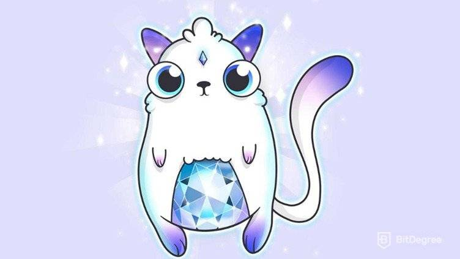

Non-Fungible Tokens (NFT) are units of data that are stored on a blockchain. Non-fungible means they cannot be replaced by another identical item, which means they are unique. An NFT is a digital asset that represents real-world objects like art, music, in-game items and videos. They are bought and sold online, frequently with cryptocurrency, and they are generally encoded with the same underlying software as many cryptos. Although they’ve been around since 2014, NFTs are gaining notoriety now because they are becoming an increasingly popular way to buy and sell digital artwork. A staggering $174 million has been spent on NFTs since November 2017.
The CryptoArt category was initiated by the cultural phenomenon such as CryptoPunks, Rare Pepe, and CryptoKitties. These pieces of ‘art’ gained notoriety due to the viral network effects and desire to pay large sums of money to acquire these pieces. The idea of NFTs emerged from what is called a “colored coin”, initially issued on the Bitcoin blockchain in 2012-2013. Colored coins are tokens that represent real-world assets on the blockchain and can be used to prove ownership of any asset, from precious metals to cars to real estate, even equities, and bonds.
NFTs main use has been found in the digital art world. Digital art ownership has proven to be a revolution since the advent of the internet. NFTs can solve just that, allowing a secure way to create, store, buy, sell, collect and trade digital assets, prove intellectual ownership, protect copyrights and allow direct access to royalties.
There are many reasons. A non-fungible token (NFT) is unique and can represent any digital asset on a blockchain (such as Ethereum, Solana, Flow, Tezos, etc.), thus making it scarce, provable, and valuable. The advent of NFTs have created a new medium for artists and creators to showcase their creations or collections. In turn, a revolution is paving the way for artists to create and monetize their work while collectors have full transparency into the authenticity and provenance into their purchases.
NFT assets can take the form of digital art, collectibles, a creative extension of music, a synergy between all three, or entirely new and unexplored compositions. Creators continue to push the boundaries of creativity using NFTs, adapting them in new and innovative ways. NFTs are the new way of creative expression, allowing artists, brands and companies to provide authenticity and originality in the rising digital age.
NFTs are the new way of creative expression, allowing artists, brands and companies to provide authenticity and originality in the rising digital age. The future of NFTs is full of uncertainty, but we've had a blast being part of this project and integrating animation production into this new era of crypto art. NFTs are changing our world by how we communicate with one another and transmit information.
Anyone, from artists to entrepreneurs, art advocates, corporations, authors, videographers, social media personalities, and even average Joes and Joannas, can create an NFT. No experience is necessary, and as long as someone can prove they created or legally own the content, they can mint an NFT. To get started on Portion, check out this step-by-step guide on how to create an NFT via either Ethereum or Palm.
Anyone and everyone. When someone purchases an NFT, they gain the rights to the unique token on the blockchain, connecting their name with the creator's art. The benefit of collecting specifically on Portion compared to other platforms is that it automatically provides the collector with 500 $PRT for each new purchase. Not only are you acquiring a digital asset, but you will also receive compensation for being a Portion collector. In the long run, collectors and creators who buy and hold larger quantities of $PRT will then reap the benefits: surprise airdrops, exclusive giveaways, priority access, just to name a few.
Play-to-earn NFT games in the Philippines give users the chance to generate income through playing. Typically, a player is rewarded with tokens and occasionally NFTs, earning more the longer they play and when they win in battles. Play-to-earn has been especially popular with users in low-income countries as an alternative income or to replace a lost income which in the case of the pandemic delivered some tough financial times in these emerging markets.
Axie Infinity has become one of the most well-known play-to-earn games. The game requires an initial investment to purchase three Axies, or you can receive a free Scholarship from another player or gaming guild. These gaming guilds provide the NFTs on loan to players so they can start to play immediately without investment. The in-game token earnings are then split in a profit share between the player and the guild. A guild utilizing this model and gaining large traction with over 5,500 global players is Crypto Gaming United.
The CryptoArt category was initiated by the cultural phenomenon such as CryptoPunks, Rare Pepe, and CryptoKitties. These pieces of ‘art’ gained notoriety due to the viral network effects and desire to pay large sums of money to acquire these pieces. Their history dates back to 2017, when American studio Larva Labs developed CryptoPunks, a series of collectable digital characters traded through NFTs, which serve as a good starting point in getting your head around the technology.
Learning how cryptocurrency works is like learning a new language. It is incredibly difficult at the beginning, but once it clicks it will stick with you forever.
The idea of NFTs emerged from what is called a “colored coin”, initially issued on the Bitcoin blockchain in 2012-2013. Colored coins are tokens that represent real-world assets on the blockchain and can be used to prove ownership of any asset, from precious metals to cars to real estate, even equities, and bonds. Although not as sophisticated, this original idea was to use the Bitcoin blockchain for assets like digital collectibles, coupons, property, company shares, and more. They were described as new technology and gave raw possibilities for the future prospects of utilization.

In 2014 Robert Dermody, Adam Krellenstein, and Evan Wagner founded Counterparty, a peer-to-peer financial platform and distributed, open-source internet protocol built on the Bitcoin blockchain. Counterparty allowed asset creation and had a decentralized exchange, thus providing a way for users to create their own tradable currencies. It had numerous ideas and opportunities, including meme trading without counterfeit issues.

In April 2015 Counterparty partnered up with the team creators of Spells of Genesis. The Spells of Genesis game creators were not only pioneers for issuing in-game assets onto a blockchain via Counterparty, but they were also among the first to launch an ICO. The creators helped fund the development of Counterparty by introducing their own in-game currency called BitCrystals.

In August 2016 new trends began to emerge. Counterparty teamed up with Force of Will, a popular trading card game, and launched their cards on the Counterparty platform. Behind Pokemon, Yu-Gi-Oh and Magic, Force of Will was the 4th ranked card game in North America according to sales volume. Their entrance into the ecosystem, where they had no prior blockchain or cryptocurrency experience before, signaled the value of putting such assets on a blockchain.

In 2016, memes entered the blockchain. In October of 2016, memes started to make their way onto the Counterparty platform. People started to add assets to a particular meme called “Rare Pepes.” Rare Pepes are a meme featuring an interesting frog character that has acquired an intense fanbase over the years. What started out to be a comic character named Pepe the Frog, has now steadily become an internet sensation as one of the most popular memes. By early 2017, with Ethereum gaining prominence, Rare Pepes started to be traded there as well. Portion's Founder, Jason Rosenstein, along with Louis Parker, ran the first live Rare Pepe auction which was held at the inaugaral Rare Digital Art Festival. CryptoArt was born with the Rare Pepe Wallet and it was the first time creators around the world could submit and sell their own artwork. It was also the first time digital art could have intrinsic value.

As Rare Pepes trading picked up, John Watkinson and Matt Hall, the creators of Larva Labs, created unique characters generated on the Ethereum blockchain. No two characters would be the same and they would be limited to 10,000. The project name, Cryptopunks, was referenced to an experiment with Bitcoin in the 1990s and can be described as an ERC721 and ERC20 hybrid.

ERC20, the most common Ethereum Token Standard, has rules that allow tokens to interact with each other, but is not the best for creating unique tokens. Enter, ERC721, which had a purpose to be the standard for NFTs on the Ethereum blockchain. ERC721 assists in tracking ownership and movements of individual tokens from a single smart contract.
CryptoKitties NFTs hit the ground running using ERC721. They are a blockchain-based virtual game that allows players to adopt, breed, and trade virtual cats using Ethereum.They exploded into popularity and landed features on major news stations including CNBC and Fox News. CryptoKitties was created by a Vancouver-based company called Axiom Zen and quickly went viral, earning funding from top investors due to their rise in users. Axiom Zen later spun off CryptoKitties into Dapper Labs.
NFTs are not just the art—they're also the certificate of authenticity
The seemingly underground movement that was taking the crypto community by storm has slowly been transitioning into more mainstream art. This transition reached an inflection point in Valentine’s day 2018 when artist Kevin Abosch partnered with GIFTO for a charitable auction. The partnership led to a $1M transaction of a beautiful piece of CryptoArt called The Forever Rose. Mr. Abosch continued to raise the stakes when he started using a combination of the Ethereum blockchain with his blood in a project called “IAMA Coin”. Abosch has not been the only artist adopting this exciting form of expression. It has slowly been gaining traction with artists exciting to push their creative boundaries.

{kind=link}